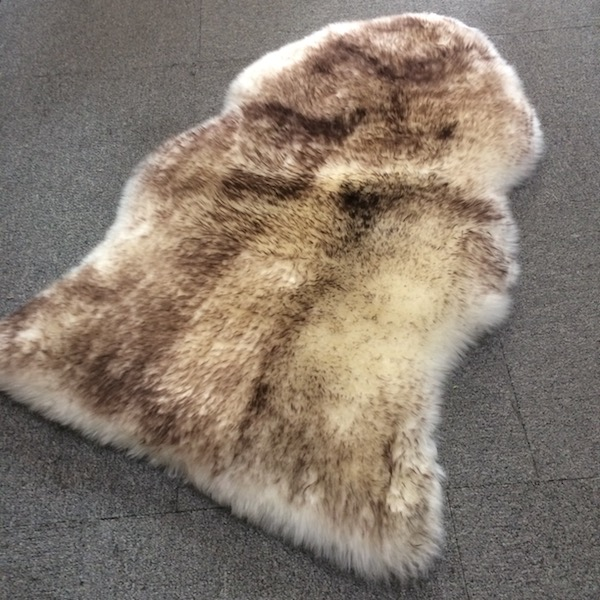

Merino Wool Stair Runner
$189.99
Long merino wool stair runner in genuine sheepskin. Premium Australian merino wool adds safety and luxury to staircases. Non-slip backing included.
Product Specifications
- Material: 100% Australian Merino Wool
- Size: 25cm x 200cm (per piece, customizable)
- Features: Non-Slip, Customizable Length, Sound Absorbing
- Origin: Premium Australian Merino Wool
- Care: Easy Care Instructions Included
Why Choose Australian Merino Sheepskin?
Our premium Australian merino sheepskin products are carefully selected for exceptional quality and comfort. Natural wool fibers offer superior temperature regulation, are naturally hypoallergenic, and provide incredible softness. Whether for home decor, medical applications, or everyday luxury comfort, our sheepskin delivers timeless elegance and practical benefits.
Add to Cart